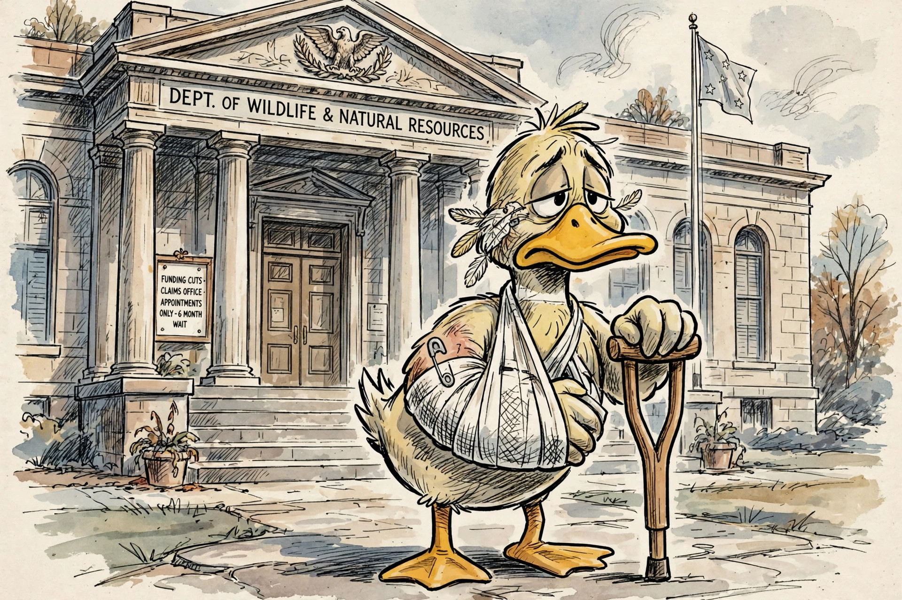

A lame duck, in American politics, is an elected official whose successor has already been elected, or who is approaching the end of their term with diminished influence because they will soon leave office. The term also describes a lame-duck session — a legislative sitting held after an election but before the newly elected members take their seats.
The phrase originated in 18th-century finance at the London Stock Exchange, where a "lame duck" was a stockbroker who had defaulted on his debts and was obliged to leave the exchange. It migrated to politics in the United States during the 19th century; one of its earliest recorded political uses described officials who remained in post after defeat, "like a lame duck" unable to keep up with the flock.
A president becomes a lame duck once a successor is elected in November, and second-term presidents are often described as lame ducks throughout their final years because the Twenty-second Amendment prevents them from running again. Lame-duck presidents retain full constitutional powers, and some use the period for pardons, executive orders and "midnight regulations" issued in the administration's final weeks.
Historically, the interval between election and inauguration was much longer: presidents took office on 4 March, and Congress could sit for months with defeated members voting on legislation. Abuses of these sessions — and the long interregnum during the secession crisis of 1860–61 and the banking crisis of 1932–33 — led to the Twentieth Amendment (1933), nicknamed the "Lame Duck Amendment", which moved the start of congressional terms to 3 January and the presidential inauguration to 20 January.
The term is also used in the United Kingdom for politicians whose authority is ebbing, and in other democracies for caretaker administrations. In Brazil, the equivalent expression is pato manco, a direct translation.